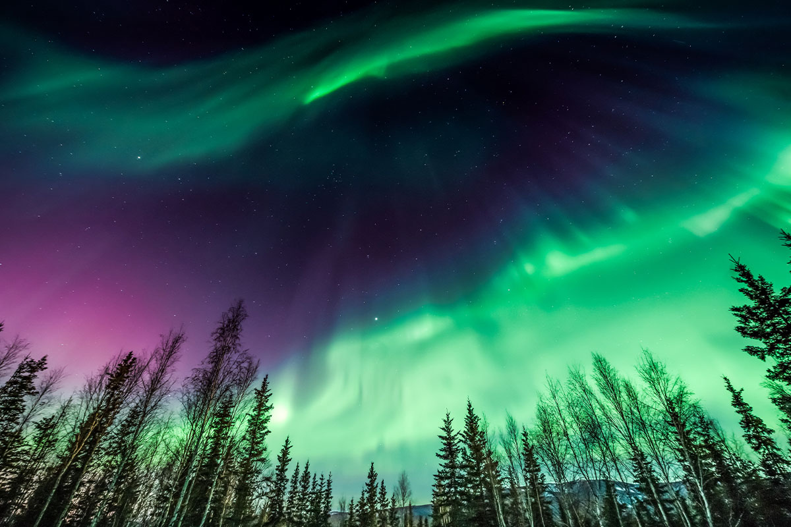

sources
https://en.wikipedia.org/wiki/Aurora
https://www.discovermagazine.com/the-sciences/everything-worth-knowing-about-auroras
https://destination-yisrael.biblesearchers.com/destination-yisrael/2012/03/sacred-fantasy-of-lightning-and-auroras-of-the-northern-lights-as-seen-from-outer-space.html
http://www.aurora-service.net/aurora-school/
https://www.accuweather.com/en/weather-news/what-causes-the-aurora-to-dance-across-the-night-sky-2/434071
https://calstate.aaa.com/via/places-visit/where-see-northern-lights-us-world
